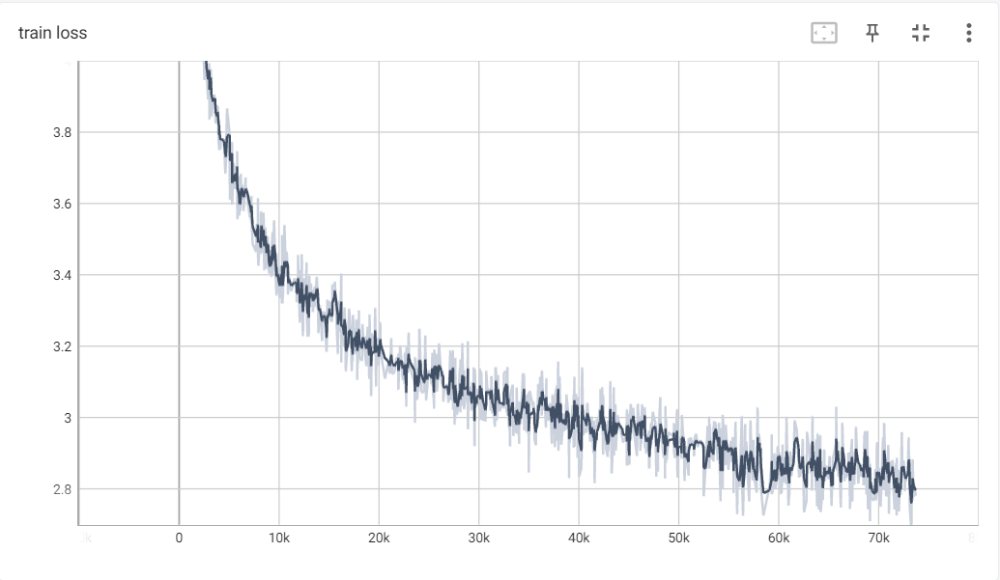
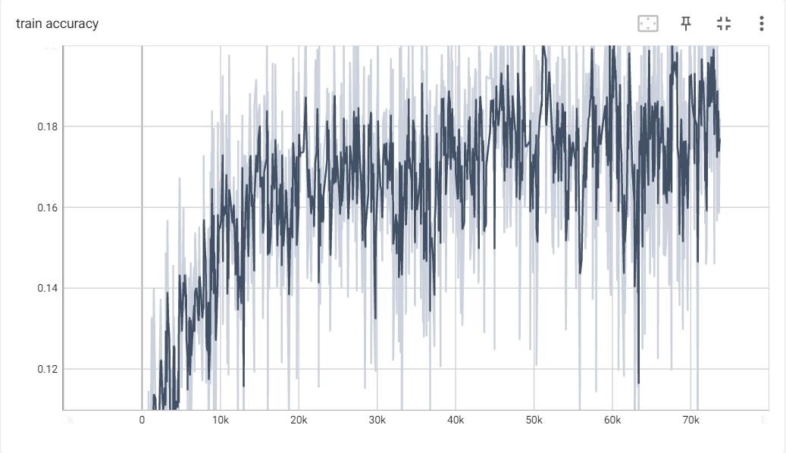
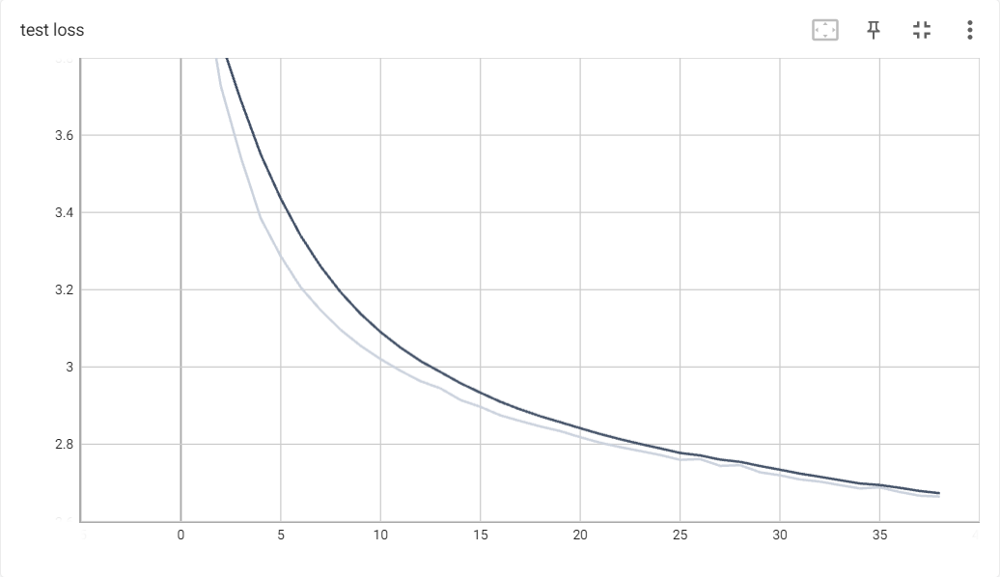
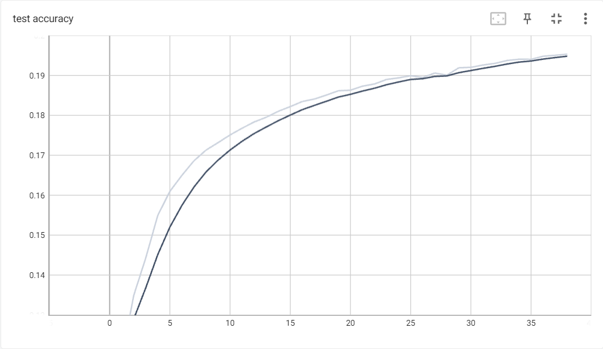
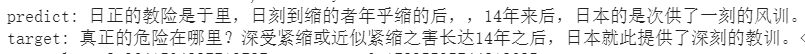

一、transformer 简介
transformer 是 Google 在 2017 年发表的文章 Attention Is All You Need 中提出的网络架构。transformer 中只使用了注意力，实现了序列数据的处理，而未使用之前常用的 RNN 或 CNN。
对 nlp 问题，我们希望的是尽可能的获取句子的整体含义。使用 RNN，我们必须逐词获取语义，因此容易导致开头词汇词义的遗忘；使用 CNN，我们必须通过增加层数来扩大获取信息的范围。这两种方法都有很大的局限。
注意力方法则可以直接获得全局信息。方法是对一条序列，求其对于本身的注意力，这被称为自注意力。
transformer 的原理和模型较为复杂，在这里只是简单说明。
二、数据集
此为训练模型所用的数据集。设定英文为源语言，中文为要翻译成的语言。
（1）Dataset 类编写
我们根据路径打开文件，获取中英文序列和单词表。并将序列直接转化为 tensor，方便读取。
class TranslateDataset(Dataset):
def __init__(self, en_path, zh_path):
en_seqs, self.en_vocab = get_seq_and_vocab(en_path, get_tokenizer("basic_english"))
zh_seqs, self.zh_vocab = get_seq_and_vocab(zh_path, zh_simple_tokenizer)
self.items = []
for i in range(len(en_seqs)):
en_seq = en_seqs[i]
zh_seq = zh_seqs[i]
src = en_seq
tgt = zh_seq[:-1]
pdt = zh_seq[1:]
self.items.append((
torch.as_tensor(src),
torch.as_tensor(tgt),
torch.as_tensor(pdt),
))
其中 get_seq_and_vocab 方法用于根据路径打开文件，根据第二个参数选择的 tokenizer 进行分词。构建序列和单词表。
我们首先定义了存储序列的列表和记录词频的字典。Counter 类可以直接根据列表统计列表中元素频率。
def get_seq_and_vocab(file_path, tokenizer):
token_freq = Counter()
seqs = []
打开文件，依次读取文件中每一行，通过 tokenizer 进行分词。序列保存到 seqs 中。更新词频。
with open(file_path, encoding="UTF-8") as f:
with tqdm(f) as tqdm_file:
tqdm_file.set_description(f"Load {file_path}")
for idx, line in enumerate(tqdm_file):
if args.debug and idx > 10000:
break
tokens_in_line = tokenizer(line)
tokens_in_line.insert(0, '<sos>')
tokens_in_line.append('<eos>')
seqs.append(tokens_in_line)
token_freq += Counter(tokens_in_line)
根据词频生成单词表，把单词序列转化为数值序列。
v = vocab(token_freq, 5, ['<pad>', '<unk>', '<sos>', '<eos>'])
v.set_default_index(v['<unk>'])
for idx in range(len(seqs)):
seqs[idx] = [v[token] for token in seqs[idx]]
return seqs, v
英文分词可以使用 pytorch 自带的 get_tokenizer("basic_english")。中文分词可以采用如下方式。此方法考虑了中文中掺杂英文的情况。
def zh_simple_tokenizer(line):
return re.findall("[a-zA-Z]+|[^\s]", line)
最后在 TranslateDataset 中，简单实现 __getitem__ 和 __len__。
def __getitem__(self, item):
return self.items[item]
def __len__(self):
return len(self.items)
（2）保存和加载处理后的数据
本数据集规模较大，如果每次都要重新进行分词处理的话需要耗费不少时间。因此可以只处理一次，以后只需调用之前处理后的结果即可。
if os.path.exists(args.processed_dataset_path):
dataset = torch.load(args.processed_dataset_path)
else:
dataset = TranslateDataset(args.en_path, args.zh_path)
torch.save(dataset, args.processed_dataset_path)
（3）划分数据集
因为本数据集只有完整的文件，没有进行划分，所以还需要对加载后的 dataset 进行划分。我们需要使用 random_split 方法实现。
train_set, dev_set, test_set = random_split(
dataset,
[train_size, dev_size, test_size],
generator=torch.Generator().manual_seed(42)
)
需要注意的是，random_split 会进行随机划分。随机划分有助于避免过拟合，但是如果每次运行程序划分的方式都不同，就会导致信息泄露。为了使每次运行时的随机划分结果一致，需要指定随机划分的种子，即代码中的 generator=torch.Generator().manual_seed(42)。
三、模型
（1）整体结构
我们要实现一个机器翻译模型。它的输入是源语句 src，和经过右移的目标语句 tgt，输出是包含结束词的目标语句 predict。
首先，我们将输入的序列扩展为词向量
class TranslationModel(nn.Module):
def forward(self, input):
src, tgt = input # (seq1_len, batch_size) (seq2_len, batch_size)
src_embed = self.embed(src) # (seq1_len, batch_size, embed_size)
tgt_embed = self.embed(tgt) # (seq2_len, batch_size, embed_size)
随后，我们为词向量添加位置编码。采取此操作的原因是注意力模型中整个序列被同时输入，模型无法得知位置信息，因此需要添加位置编码。具体的添加位置编码的方式会在后面说明。
src_embed_encoded = self.positional_encoding(src_embed)
# (seq1_len, batch_size, embed_size)
tgt_embed_encoded = self.positional_encoding(tgt_embed)
# (seq2_len, batch_size, embed_size)
我们根据输入 src 和 tgt 确定各类掩码，并将掩码与 src_embed_encoded、tgt_embed_encoded 一同输入到 transformer 中。
tgt_mask 用于处理预测时的时序问题。因为如果将 tgt_embed_encoded 直接输入到 transformer，则 transformer 就会在同一时刻得知序列的全部信息，无法实现逐词生成。
src_pad_mask 和 src_pad_mask 用于将 '<pad>' 忽略。避免填充词影响模型的权重。
tgt_mask = get_tgt_mask(tgt.shape[0]) # (seq2_len, seq2_len)
src_pad_mask = get_pad_mask(src) # (seq1_len, batch_size, embed_size)
tgt_pad_mask = get_pad_mask(tgt) # (seq2_len, batch_size, embed_size)
out = self.transformer(
src_embed_encoded,
tgt_embed_encoded,
tgt_mask=tgt_mask,
src_key_padding_mask=src_pad_mask,
tgt_key_padding_mask=tgt_pad_mask,
) # (seq2_len, batch_size, embed_size)
最后将 transformer 的输出经过多层感知机调整为适当的形状，输出预测结果。
predict = self.multi(out) # (seq2_len, batch_size, class_num)
return predict
（2）词向量
我们定义嵌入层为 TokenEmbedding，而不是直接使用 nn.Embedding。
class TranslationModel(nn.Module):
def __init__(self, vocab_size, embed_size, class_num, dropout):
super(TranslationModel, self).__init__()
self.embed = TokenEmbedding(vocab_size, embed_size)
TokenEmbedding 定义如下。很容易看出，我们只是将 Embedding 输出的词向量乘以了 $\sqrt{\text{emb size}}$。这样做更便于训练。具体原因可见Transformer 3. word embedding 输入为什么要乘以 embedding size的开方。
class TokenEmbedding(nn.Module):
def __init__(self, vocab_size, embed_size):
super(TokenEmbedding, self).__init__()
self.embedding = nn.Embedding(vocab_size, embed_size)
self.embed_size = embed_size
def forward(self, seq):
return self.embedding(seq) * math.sqrt(self.embed_size)
（3）位置编码
在模型中，我们随后定义了位置编码层
self.positional_encoding = PositionalEncoding(embed_size, dropout)
PositionalEncoding 定义如下。位置编码得到的结果是一个形状为 (max_len, 1, embed_size) 的张量 $pos_embedding$。其中 $p_{i1}$ 表示第 $i$ 个位置的编码。将该编码与原来的 seq_embed 相加，就得到了经过位置编码后的词向量序列。
关于位置编码的原理，可以参考一文教你彻底理解Transformer中Positional Encoding。该编码使用正余弦函数生成，可以保证不同位置的编码唯一。
class PositionalEncoding(nn.Module):
def __init__(self, embed_size, dropout, max_len=5000):
super(PositionalEncoding, self).__init__()
den = torch.exp(- torch.arange(0, embed_size, 2) * math.log(10000) / embed_size)
pos = torch.arange(0, max_len).reshape(max_len, 1)
pos_embedding = torch.zeros((max_len, embed_size))
pos_embedding[:, 0::2] = torch.sin(pos * den)
pos_embedding[:, 1::2] = torch.cos(pos * den)
pos_embedding = pos_embedding.unsqueeze(-2)
self.dropout = nn.Dropout(dropout)
self.register_buffer('pos_embedding', pos_embedding)
def forward(self, seq_embed):
seq_embed_encoded = seq_embed + self.pos_embedding[:seq_embed.size(0), :]
# (seq_len, batch_size, embed_size) + (seq_len, 1, embed_size)
return self.dropout(seq_embed_encoded)
（4）掩码
填充掩码用来屏蔽 '<pad>' 索引，是一个和输入同大小的张量，其中每一个值表示对应的位置是否需要被屏蔽。计算方式如下，进行了转置是因为 pytorch 的 transformer 要求第一维为 batch。
def get_pad_mask(seq, pad_idx=0):
return (seq == pad_idx).permute(1, 0)
后继掩码用来模拟时间步，防止模型在进行预测时查看未来的单词。我们需要用一个三角形矩阵来模拟此过程。
def get_tgt_mask(size):
mask = torch.tril(torch.ones(size, size) == 1).float()
mask = mask.masked_fill(mask == 0, float("-inf"))
mask = mask.masked_fill(mask == 1, float(0.0))
mask = mask.to(args.device)
return mask
四、训练
训练时的通用步骤不再详述。只说明一些值得注意的地方。
（1）自定义 collate_fn
因为序列长度不定，所以需要自行对其，需要自定义 dataloader 的 collate_fn。在其中，使用了 pad_sequence 对一批序列进行对齐。pad_sequence 的默认填充值为 0。如果 '<pad>' 的对应值不是 0，还需要自行设定。
def collate_fn(data):
src, tgt, pdt = zip(*data)
src = pad_sequence(src)
tgt = pad_sequence(tgt)
pdt = pad_sequence(pdt)
return [src, tgt], pdt
（2）交叉熵损失函数 ignore_index 的设置
虽然我们使用 '<pad>' 进行了对齐，但是 '<pad>' 还没有被认为是特殊的符号。此时在损失函数中，'<pad>' 与其他字符的预测差距还是会被计算到损失之中。又因为 '<pad>'会在序列中经常出现，所以如果不特殊处理 '<pad>'，则训练后预测的结果便一定总是 <pad>。
因此我们希望损失函数忽略 '<pad>'。只需要设定 ignore_index 参数。如下所示将 ignore_index 设定为 '<pad>' 对应的数值。
loss_fn = nn.CrossEntropyLoss(ignore_index=dataset.zh_vocab['<pad>']).to(args.device)
（3）计算损失函数时对输入进行处理
阅读一下 pytorch 文档中关于交叉熵损失函数的说明，就可以得知我们的模型默认的输出不能直接传入损失函数进行计算，必须重新设定维度。
模型的预测形状为 (seq_len, batch_size, class_num)， 需要的输入为 (batch_size, class_num, seq_len)；目标的形状为 (seq_len, batch_size)，需要的输入为 (batch_size, seq_len)。因此重新定义了 criterion 方法作为损失函数，使用 permute 方法调整维度。将 criterion 传入 train、eval 方法中作为损失函数。
def criterion(predict, target):
return loss_fn(predict.permute(1, 2, 0), target.permute(1, 0))
for i in range(args.max_epoch):
global_epoch += 1
train(train_loader, net, criterion, optim)
save_checkpoint(net, optim, global_epoch, global_train_step)
evaluate("dev", dev_loader, net, criterion)
evaluate("test", test_loader, net, criterion)
（4）训练结果




本来应该用机器翻译的评价指标，如 BLEU 的，但是一开始没有考虑到
从图中可以看到，模型的翻译能力并不算强，并且还有继续训练下去的空间。为什么不继续训练了呢？因为 Colab 时间用完了
:(
五、总结
本次实践了 transformer 模型的构建和训练。在训练过程中学到了一些知识，主要有
- transformer 模型的结构
- 注意力的掩码机制
- 位置编码
- 损失函数 ignore_index 的使用
- 数据集处理后的存储和加载
- 通过scheduler动态调整学习率的方法（本次未使用，之后应该会应用）
- 深度学习上层架构，如 ignite、lightning（本次未使用，之后应该会应用）
也出现了一些问题
- 未考虑张量形状，导致出现了“位置编码时为不同 batch 赋予了不同的编码“的bug
- 因为上一条内容浪费了大量的训练时间
- 未能设置适当的学习率，导致训练缓慢
- 没有使用 BLEU 等指标进行评价
- 没有对中文进行分词，一字多义可能增加了训练难度
希望下一次避免犯下类似的错误。